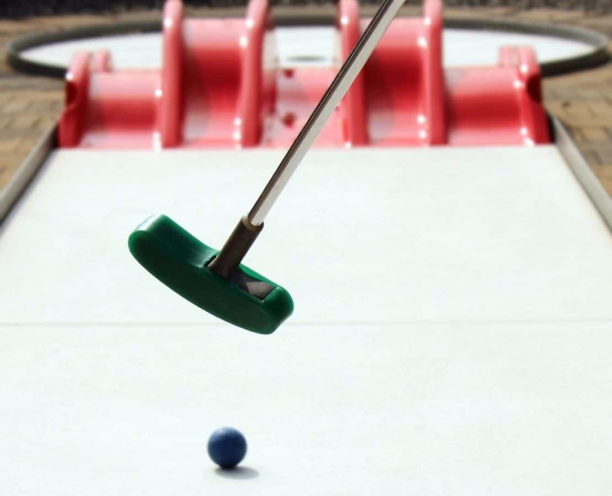

Crazy golf · Bank
Puttshack, Bank
- Tech-scored crazy golf on a 9-hole course, with the ball tracking itself so nobody argues about strokes.
- £14 for a round, £20 for unlimited golf Sunday to Thursday. Junior rates are lower.
- Flat pricing on the standard round, with no peak or off-peak.
- A round for two takes about 30 minutes.

Photo of crazy golf, not this specific venueWhat is Puttshack?
Puttshack is crazy golf where the ball does the scoring. Each ball carries a chip that's tracked by sensors under the green, so your score appears on a screen automatically rather than being written down, and the holes are built around games rather than just obstacles.
Bank has three 9-hole courses, three bars and two private event rooms, and is one of four UK Puttshack sites alongside White City, Lakeside and Watford.
How does it work?
You book a round on one of the three 9-hole courses and play as a group, with scoring tracked automatically on every hole. A round for two players typically takes about 30 minutes; larger groups take longer.
A dining table can be booked alongside the golf. Puttshack's Challenge Hole is a separate, private interactive suite bookable for 60 or 90 minutes, seating up to 6 players; bigger groups can book two suites for up to 12 players, with full private hire available for larger events.
How much does it cost?
| Product | Adult | Junior | Availability |
|---|---|---|---|
| 9-Hole round | £14 | £9.50 | Every day |
| Unlimited golf | £20 | £16 | Sunday to Thursday only |
Per person. Booking online saves £1 per game versus paying on arrival. Verified 5 September 2026 from Puttshack's own published rates.
What that means in practice
- The 9-hole rate doesn't change by day or time. A Tuesday morning round costs the same as a Saturday night one.
- Unlimited golf is the one exception. It's only available Sunday to Thursday, so weekend visitors can only book by the round.
- Unlimited golf pays for itself at two rounds on the days it's available: £20 beats £28 for two separate £14 rounds.
- For twelve adults, a standard round is £168, and unlimited golf (Sunday to Thursday) is £240.
Bookings are paid in full up front. A 10% service charge is added at checkout on top of the prices above.
What is the food and drink like?
Puttshack Bank runs a globally-inspired food menu alongside a full cocktail bar, including its signature Sapphire Island Iced Tea. The bar runs the length of the venue, so you don't need to leave the course to order. The Challenge Hole includes full-service dining brought to the suite.
How do you get there?
Get directions on Google Maps ↗
Bank. The station sits on the Central, Northern and Waterloo & City lines, plus the DLR, making it one of the best-connected venues in this set for anyone working in the City.
How do you book?
Book online through Puttshack's own site, choosing a course, a product and a headcount. Online prices carry a £1 per game discount versus paying on arrival, and full payment is taken at the time of booking.
Large groups and private hire go through Puttshack's events team, who can host up to 650 guests across the venue for a full buyout.
Common questions
- How much is Puttshack, Bank?
- £14 per adult for a 9-hole round, or £20 for unlimited golf Sunday to Thursday. Junior rates are £9.50 and £16. Booking online saves £1 per game.
- Does Puttshack have peak pricing?
- No, the 9-hole rate is flat all week. Unlimited golf is the one product with a restriction: it's only available Sunday to Thursday, not Friday or Saturday.
- Is Unlimited Golf worth it?
- If you'll play more than one round on a day it's available, yes — £20 beats £28 for two separate rounds.
- What is the Challenge Hole?
- A private interactive golf suite bookable for 60 or 90 minutes, seating up to 6 players. Bigger groups book two suites for up to 12 players; larger events go through Puttshack's events team.
- How long does a round take?
- About 30 minutes for two players; larger groups take longer.
You might also like
Similar venues in London